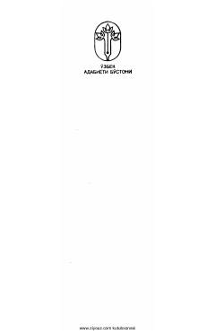

QHQadimiy turkiy yodgorliklar va mutafakkirlarning sara hikmatlaridan iborat to'plam.
Ushbu to'plamga qadimiy turkiy bitiglar, Urxun va Yenisey yodgorliklari, shuningdek, Mahmud Koshg'ariy, Yusuf Xos Hojib va Ahmad Yugnakiy kabi buyuk mutafakkirlarning asarlaridan parchalar kiritilgan. Kitob turkiy xalqlarning qadimiy adabiy merosi va hikmatlarini o'rganishda muhim manba hisoblanadi.